Every role has an asset
main-menu
background
frontendkit.backdrop.title
logo
frontendkit.brand.logo
Continue
icon.menu.continue
New Game
icon.menu.new-game
Load Game
icon.menu.load-game
Encyclopedia
icon.menu.encyclopedia
Settings
icon.menu.settings
Quit
icon.menu.quit
Records
frontendkit.icon.records
settings
Gameplay
icon.menu.settings
Interface
frontendkit.icon.interface
Display
frontendkit.icon.display
Audio
frontendkit.icon.audio
Accessibility
frontendkit.icon.accessibility
Controls
frontendkit.icon.controls
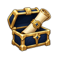
Saves
icon.ui.save
encyclopedia
Bestiary
frontendkit.icon.bestiary
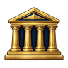
Gods
icon.ui.pantheon
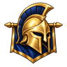
Heroes
icon.ui.recruit
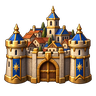
Towns
icon.world.town
Spells
icon.menu.encyclopedia
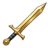
Skills
icon.ui.sword2
Artifacts
frontendkit.icon.artifacts
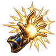
Abilities
icon.action.ability
Neutral
icon.ui.star
editor-toolbar
New
frontendkit.icon.new-map
Generate
frontendkit.icon.generate
Open
icon.menu.load-game
Save
icon.ui.save
Export
frontendkit.icon.export
Import
frontendkit.icon.import
Delete
frontendkit.icon.delete
Undo
frontendkit.icon.undo
Redo
frontendkit.icon.redo
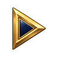
Play
icon.ui.play
Back
icon.ui.back
editor-tools
Select
frontendkit.icon.select
Erase
frontendkit.icon.erase
Terrain
frontendkit.icon.terrain
Forest
frontendkit.icon.forest
Water
frontendkit.icon.water
Roads
frontendkit.icon.road
Hex grid
frontendkit.icon.hex
Sites
icon.world.town
Empires
icon.ui.flag
Check
icon.ui.check
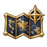
Map
icon.ui.map
common
warning
frontendkit.icon.warning
rank-medallion
frontendkit.icon.records
header
frontendkit.chrome.header
round-socket
frontendkit.chrome.round-socket
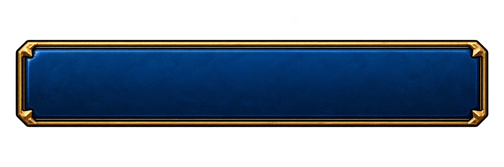
button
gui.control.button
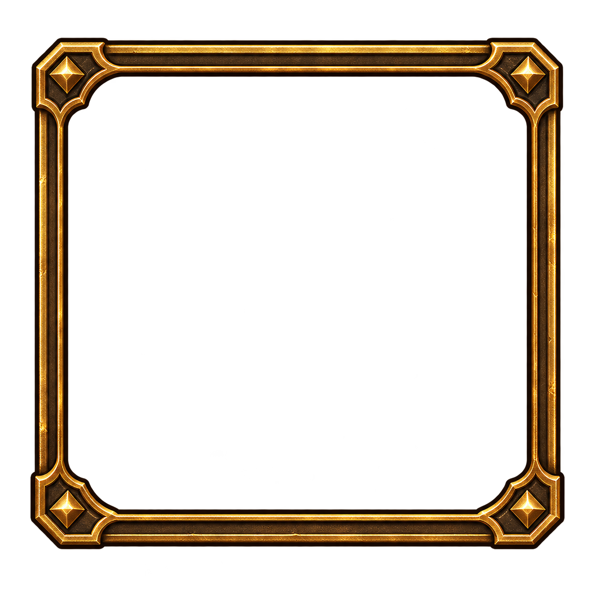
portrait-socket
gui.control.socket
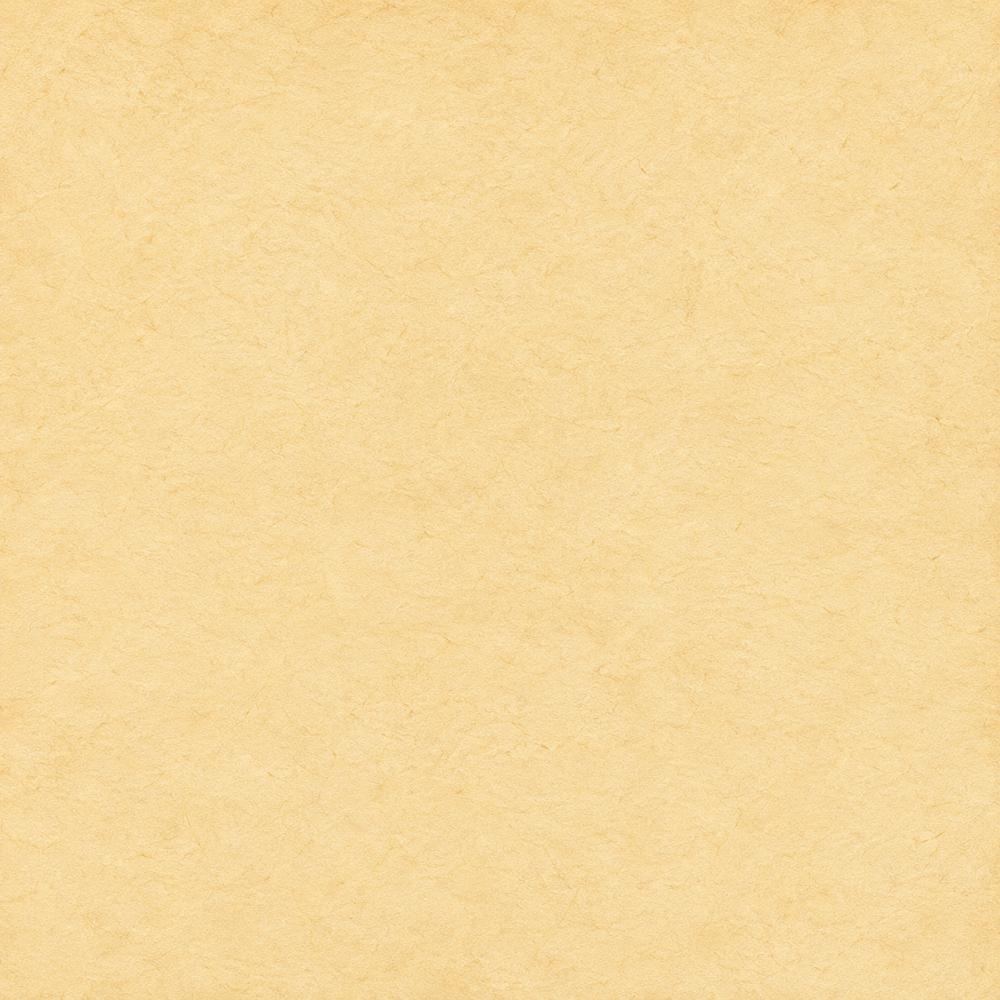
parchment
gui.surface.parchment
stone
gui.surface.stone
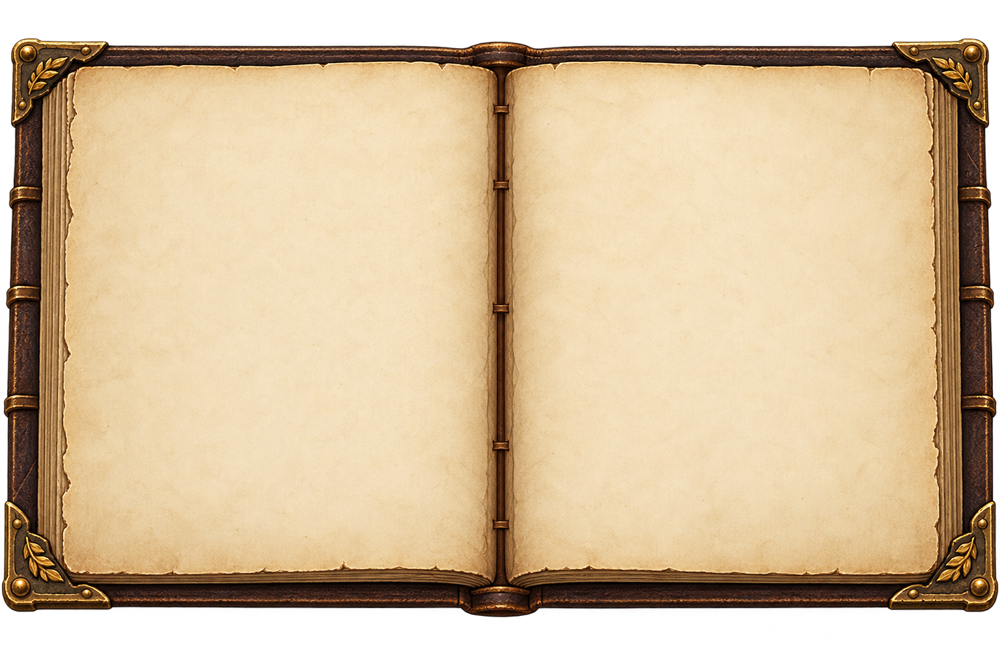
book
gui.book.open
Back
icon.ui.back
Close
icon.ui.close
Confirm
icon.ui.check
Locked
icon.ui.lock
Info
icon.ui.info
Play
icon.ui.play
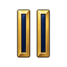
Pause
icon.ui.pause
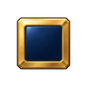
Stop
icon.ui.stop
Swap
icon.ui.swap
Upgrade
icon.ui.upgrade
Search · native control / supplied CSS or SVG primitive
code.search-glyph
Checkbox · native control / supplied CSS or SVG primitive
code.checkbox
Slider · native control / supplied CSS or SVG primitive
code.range
Scrollbar · native control / supplied CSS or SVG primitive
code.scrollbar
creature-stats
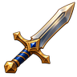
Attack
icon.stat.attack
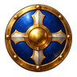
Defense
icon.stat.defense
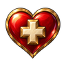
Health
icon.stat.hp
Damage
icon.stat.damage
Speed
icon.stat.speed
Growth
icon.ui.growth
Shots
icon.stat.shots
Range
icon.stat.range
pantheons
greek
frontendkit.banner.greek
norse
frontendkit.banner.norse
egyptian
frontendkit.banner.egyptian
japanese
frontendkit.banner.japanese
celtic
frontendkit.banner.celtic
mesoamerican
frontendkit.banner.mesoamerican
setup-facts
Empires
icon.ui.flag
Size
icon.ui.map
Victory
icon.menu.skirmish
Climate
frontendkit.icon.display
Difficulty
icon.ui.sword2
Story
icon.menu.encyclopedia
Wealth
icon.res.gold